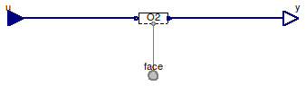
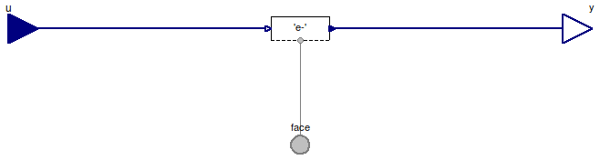
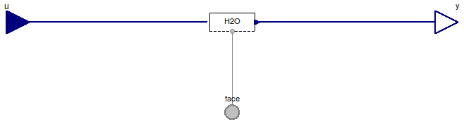

Table of Contents
- User's Guide
- Blocks
- Conditions
- Assemblies
- Regions
- Subregions
- Connectors
- Characteristics
- Units
- Quantities
- BaseClasses
Download
- Latest version (**Empty; please check back soon or contact kdavies4 at gmail.com.)

| Name | Description |
|---|---|
| Condition for gas | |
| Condition for graphite | |
| Condition for ionomer | |
| Condition for liquid | |
| Base classes (generally not for direct use) |
 FCSys.Conditions.ByConnector.FaceBus.Single.Phases.Gas
FCSys.Conditions.ByConnector.FaceBus.Single.Phases.Gas
| Type | Name | Default | Description |
|---|---|---|---|
| Species | |||
| Boolean | inclH2 | false | Hydrogen (H2) |
| Face | H2 | H2 conditions | |
| Boolean | inclH2O | false | Water (H2O) |
| Face | H2O | H2O conditions | |
| Boolean | inclN2 | false | Nitrogen (N2) |
| Face | N2 | N2Conditions | |
| Boolean | inclO2 | false | Oxygen (O2) |
| Face | O2 | O2 conditions | |
| Type | Name | Description |
|---|---|---|
| FaceBus | face | Multi-species connector for material, momentum, and energy |
| RealInputBus | u | Input bus for values of specified conditions |
| RealOutputBus | y | Output bus of measurements |
model Gas "Condition for gas" extends BaseClasses.EmptyPhase; // Conditionally include species. parameter Boolean inclH2=false "Hydrogen (H2)"; Face.Single.Face H2 if inclH2 "H2 conditions"; parameter Boolean inclH2O=false "Water (H2O)"; Face.Single.Face H2O if inclH2O "H2O conditions"; parameter Boolean inclN2=false "Nitrogen (N2)"; Face.Single.Face N2 if inclN2 "N2Conditions"; parameter Boolean inclO2=false "Oxygen (O2)"; Face.Single.Face O2 if inclO2 "O2 conditions"; equation // H2 connect(H2.face, face.H2); connect(u.H2, H2.u); connect(H2.y, y.H2); // H2O connect(H2O.face, face.H2O); connect(u.H2O, H2O.u); connect(H2O.y, y.H2O); // N2 connect(N2.face, face.N2); connect(u.N2, N2.u); connect(N2.y, y.N2); // O2 connect(O2.face, face.O2); connect(u.O2, O2.u); connect(O2.y, y.O2); end Gas;
FCSys.Conditions.ByConnector.FaceBus.Single.Phases.Graphite
| Type | Name | Default | Description |
|---|---|---|---|
| Species | |||
| Boolean | 'inclC+' | false | Carbon plus (C+) |
| Face | 'C+' | C+ conditions | |
| Boolean | 'incle-' | false | Electrons (e-) |
| Face | 'e-' | e- conditions | |
| Type | Name | Description |
|---|---|---|
| FaceBus | face | Multi-species connector for material, momentum, and energy |
| RealInputBus | u | Input bus for values of specified conditions |
| RealOutputBus | y | Output bus of measurements |
model Graphite "Condition for graphite" extends BaseClasses.EmptyPhase; // Conditionally include species. parameter Boolean 'inclC+'=false "Carbon plus (C+)"; Face.Single.Face 'C+' if 'inclC+' "C+ conditions"; parameter Boolean 'incle-'=false "Electrons (e-)"; Face.Single.Face 'e-' if 'incle-' "e- conditions"; equation // C+ connect('C+'.face, face.'C+'); connect(u.'C+', 'C+'.u); connect('C+'.y, y.'C+'); // e- connect('e-'.face, face.'e-'); connect(u.'e-', 'e-'.u); connect('e-'.y, y.'e-'); end Graphite;
FCSys.Conditions.ByConnector.FaceBus.Single.Phases.Ionomer
| Type | Name | Default | Description |
|---|---|---|---|
| Species | |||
| Boolean | 'inclC19HF37O5S-' | false | Nafion sulfonate minus (C19HF37O5S-) |
| Face | 'C19HF37O5S-' | C19HF37O5S- conditions | |
| Boolean | 'inclH+' | false | Protons (H+) |
| Face | 'H+' | H+ conditions | |
| Boolean | inclH2O | false | Water (H2O) |
| Face | H2O | H2O conditions | |
| Type | Name | Description |
|---|---|---|
| FaceBus | face | Multi-species connector for material, momentum, and energy |
| RealInputBus | u | Input bus for values of specified conditions |
| RealOutputBus | y | Output bus of measurements |
model Ionomer "Condition for ionomer" extends BaseClasses.EmptyPhase; // Conditionally include species. parameter Boolean 'inclC19HF37O5S-'=false "Nafion sulfonate minus (C19HF37O5S-)"; Face.Single.Face 'C19HF37O5S-' if 'inclC19HF37O5S-' "C19HF37O5S- conditions"; parameter Boolean 'inclH+'=false "Protons (H+)"; Face.Single.Face 'H+' if 'inclH+' "H+ conditions"; parameter Boolean inclH2O=false "Water (H2O)"; Face.Single.Face H2O if inclH2O "H2O conditions"; equation // C19HF37O5S- connect('C19HF37O5S-'.face, face.'C19HF37O5S-'); connect(u.'C19HF37O5S-', 'C19HF37O5S-'.u); connect('C19HF37O5S-'.y, y.'C19HF37O5S-'); // H+ connect('H+'.face, face.'H+'); connect(u.'H+', 'H+'.u); connect('H+'.y, y.'H+'); // H2O connect(H2O.face, face.H2O); connect(u.H2O, H2O.u); connect(H2O.y, y.H2O); end Ionomer;
FCSys.Conditions.ByConnector.FaceBus.Single.Phases.Liquid
| Type | Name | Default | Description |
|---|---|---|---|
| Species | |||
| Boolean | inclH2O | false | Water (H2O) |
| Face | H2O | H2O conditions | |
| Type | Name | Description |
|---|---|---|
| FaceBus | face | Multi-species connector for material, momentum, and energy |
| RealInputBus | u | Input bus for values of specified conditions |
| RealOutputBus | y | Output bus of measurements |
model Liquid "Condition for liquid" extends BaseClasses.EmptyPhase; // Conditionally include species. parameter Boolean inclH2O=false "Water (H2O)"; Face.Single.Face H2O if inclH2O "H2O conditions"; equation // H2O connect(H2O.face, face.H2O); connect(u.H2O, H2O.u); connect(H2O.y, y.H2O); end Liquid;